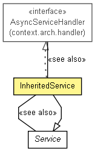

context.arch.service
Class InheritedService
java.lang.Object
 context.arch.service.Service
context.arch.service.InheritedService
context.arch.service.Service
context.arch.service.InheritedService
- All Implemented Interfaces:
- AsyncServiceHandler
public class InheritedService
- extends Service
- implements AsyncServiceHandler

This class implements a generic inherited service. A service is inherited
by a server from a widget that it uses. It allows the server to act as
a proxy to widget services.
- See Also:
Service,
AsyncServiceHandler
| Fields inherited from class context.arch.service.Service |
ASYNCHRONOUS, comm, EXECUTED, EXECUTING, FAILED, pending, SERVICE_REQUEST, SERVICE_REQUEST_REPLY, SERVICE_RESULT, SERVICE_RESULT_REPLY, STATUS, SYNCHRONOUS |
|
Constructor Summary |
InheritedService(CommunicationsHandler comm,
java.lang.String serverName,
java.lang.String serviceName,
FunctionDescriptions descriptions,
java.lang.String serviceHost,
int servicePort,
java.lang.String serviceId)
Basic constructor that creates an inherited service object. |
InheritedService(CommunicationsHandler comm,
java.lang.String serverName,
java.lang.String serviceName,
FunctionDescriptions descriptions,
java.lang.String serviceHost,
java.lang.String servicePort,
java.lang.String serviceId)
Basic constructor that creates an inherited service object. |
| Methods inherited from class java.lang.Object |
clone, equals, finalize, getClass, hashCode, notify, notifyAll, toString, wait, wait, wait |
InheritedService
public InheritedService(CommunicationsHandler comm,
java.lang.String serverName,
java.lang.String serviceName,
FunctionDescriptions descriptions,
java.lang.String serviceHost,
java.lang.String servicePort,
java.lang.String serviceId)
- Basic constructor that creates an inherited service object.
- Parameters:
comm - Object that implements the CommunicationsHandler interfaceserverName - Name of the server offering the inherited serviceserviceName - Name of the service being inheriteddescriptions - FunctionDescriptions for the inherited serviceserviceHost - Hostname of the component offering the original serviceservicePort - Port of the component offering the original serviceserviceId - Id of the component offering the original service
InheritedService
public InheritedService(CommunicationsHandler comm,
java.lang.String serverName,
java.lang.String serviceName,
FunctionDescriptions descriptions,
java.lang.String serviceHost,
int servicePort,
java.lang.String serviceId)
- Basic constructor that creates an inherited service object.
- Parameters:
comm - Object that implements the CommunicationsHandler interfaceserverName - Name of the server offering the inherited serviceserviceName - Name of the service being inheriteddescriptions - FunctionDescriptions for the inherited serviceserviceHost - Hostname of the component offering the original serviceservicePort - Port of the component offering the original serviceserviceId - Id of the component offering the original service
execute
public DataObject execute(ServiceInput serviceInput)
- This method is called when a component requests that this inherited service
be executed. It checks to see whether the service is synchronous or
asynchronous and then calls the inherited service. If the service is
asynchronous, it adds the request to its pending queue.
- Specified by:
execute in class Service
- Parameters:
serviceInput - Object containing all information required to execute the service
- Returns:
- result of the service request
- See Also:
CommunicationsHandler#executeSynchronousWidgetService(String,int,String,String,String,AttributeNameValues),
CommunicationsHandler#executeAsynchronousWidgetService(AsyncServiceHandler,String,int,String,String,String,AttributeNameValues,String),
PendingOut.addPending(ServiceInput)
asynchronousServiceHandle
public DataObject asynchronousServiceHandle(java.lang.String requestTag,
DataObject data)
throws MethodException,
InvalidMethodException
- This method is called when this inherited asynchronous service returns
the result. It collects the returned data, determines which requester
the data should go to, removes the request from the pending queue and
sends the data to the requester.
- Specified by:
asynchronousServiceHandle in interface AsyncServiceHandler
- Parameters:
requestTag - Unique id to identify the requestdata - DataObject containing the service results
- Returns:
- Always returns null
- Throws:
MethodException - thrown if the asynchronous service result can't
be handled successfully
InvalidMethodException - thrown if the asynchronous service result
was not expected and can't be routed correctly- See Also:
Service#sendServiceResult(ServiceInput,AttributeNameValues),
PendingOut.removePending(String)